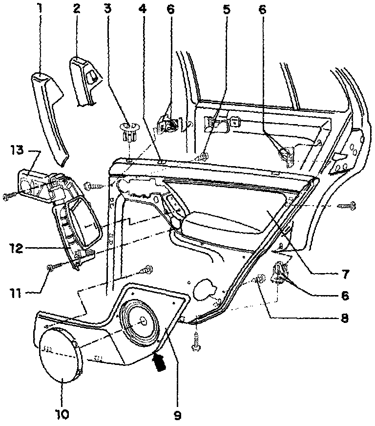
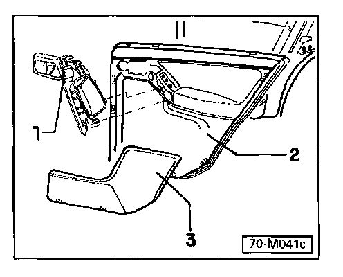

Rear Door Trim, Removing and Installing
Rear door trim, removing and installing

1. Door pull trim
For vehicles without power windows
Clipped into door/door pull
2. Door pull trim
For vehicles with power windows
Clipped into door/door pull
3. Trim plate
4. Clip
5. Phillips-head screw
Quantity: 6
To secure door pull
6. Trim clip
Two-part
7. Trim
Removing:
Unscrew locking knob
Remove window crank (where applicable)
Unclip door pull trim 1 or 2
Remove screws 11
Pry off trim with tool
Disconnect electric wiring (power window switch, speaker) where applicable
8. Phillips-head screw
To secure door tray
Quantity; 5
9. Door tray
Secured by screws through rear of trim
Speaker fastened to door tray
From 1996 model year: Speaker relocated to rear parcel shelf and speaker mount discontinued. Refer to figure below
10. Speaker cover
Removing: press down on retaining lugs with screwdriver through opening in door tray (arrow)
From 1996 m.y.: speaker relocated to rear parcel shelf and speaker cover in trim panel discontinued Refer to figure below
11. Screw
12. Door pull
Secured by screws through rear of trim
13. Cover
Clipped into door pull
Mounting location for treble speaker (tweeter)
If treble speaker is installed, remove only after removing door trim and disassembling door pull (danger of damage)
From 1996 m.y.: Speaker relocated to rear parcel shelf and speaker cover in door pull discontinued Refer to figure below

Door pull and door trim panel without speaker mount (from 1996 m.y.)
1. Door pull
Without speaker cover or speaker (relocated to rear shelf)
2. Rear trim
3. Door tray
Without speaker cover or speaker (relocated to rear shelf)
Note: The speaker covers are discontinued. The new door tray is completely solid.